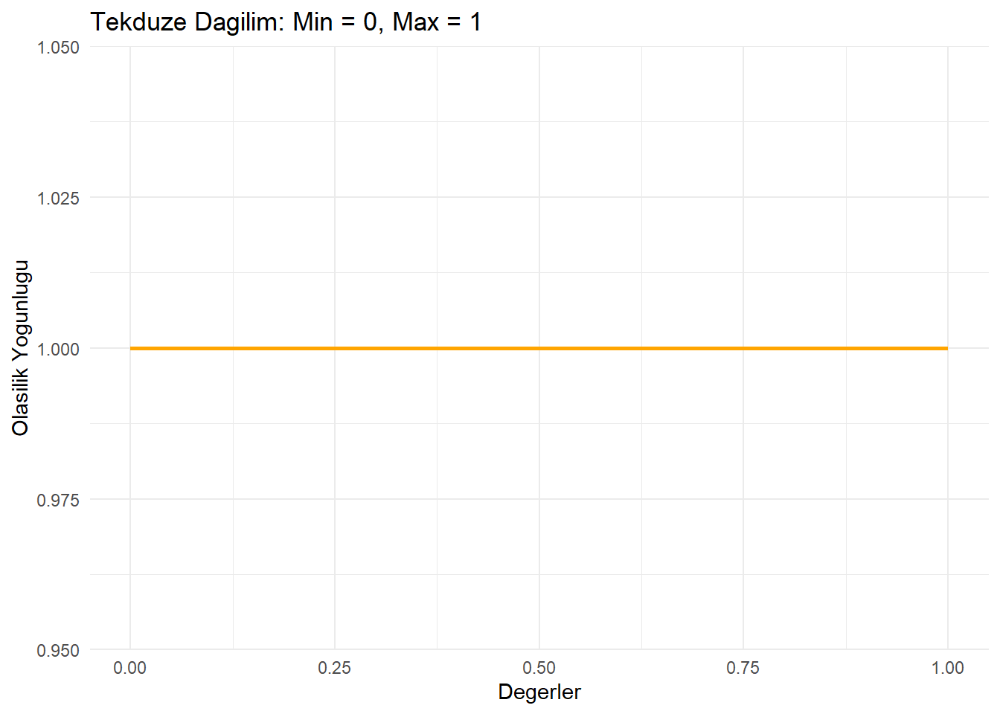

3.1 Ayrık Olasılık Dağılımları (Discrete Probability Distributions)
Ayrık olasılık dağılımları, yalnızca belirli ve sayılabilir değerler üzerinde tanımlanan olasılık dağılımlarıdır. Bu, değerlerin kesintili olduğu ve arada başka olasılıkların bulunmadığı anlamına gelir. Örneğin, bir zarın atılması durumunda sonuçlar yalnızca {1, 2, 3, 4, 5, 6} şeklindedir. Bir zarın 3.5 gibi bir sonuç göstermesi mümkün değildir, çünkü bu değer ayrık olasılıkların tanımı dışındadır.
Bu tür dağılımlar, bir olayın belirli bir sayıda gerçekleşme olasılığını modellemek ve tahmin etmek için kullanılır. Ayrık olasılık dağılımları, genellikle bir olayın “kaç kez” veya “hangi durumda” gerçekleştiğini anlamak için kullanılır.
3.1.1 Binom Dağılımı (Binomial Distribution)
Binom dağılımı, belirli bir sayıda bağımsız denemede bir olayın kaç kez başarılı olduğunu modellemek için kullanılır. Örneğin, 10 kez madeni para atıldığında, yazının kaç kez geleceğini tahmin etmek binom dağılımıyla modellenebilir.
Binom dağılımı, her bir denemenin birbirinden bağımsız olduğu ve her birinde başarı veya başarısızlık gibi iki olası sonuç bulunduğu durumları ifade eder. Başarı olasılığı sabittir ve her bir deneme sonucu diğerlerinden bağımsızdır. Bu nedenle, belirli bir deneme sayısı için başarı sayısının olasılıklarını modellemek için oldukça kullanışlıdır.
# dbinom() fonksiyonu ile olasılık hesaplamadbinom(# dbinom() fonksiyonu x =3, # x: Başarı sayısı size =10, # size: Toplam deneme sayısı prob =0.5# prob: Her bir denemede başarı olasılığı)
[1] 0.1171875
# 10 bağımsız denemede, başarı olasılığı 0.5 olan bir olayın tam 3 kez # gerçekleşme olasılığını hesaplar.
set.seed() Fonksiyonu
set.seed() fonksiyonu, rastgele sayı üretim süreçlerinde kullanılan bir kontrol mekanizmasıdır ve R’de rastgelelik ile çalışırken sonuçların yeniden üretilebilir olmasını sağlar.
Rastgelelik ve Sorunlar: Rastgele sayı üretimi aslında “sözde rastgele sayı üretimi” (pseudo-random number generation) olarak çalışır. Bu işlem bir başlangıç noktasına (seed) dayanır. Eğer başlangıç noktası aynıysa, üretilen rastgele sayılar da aynı olur.
Eğer set.seed()kullanılmazsa: R her çalıştırıldığında farklı rastgele sayılar üretir. Bu durum, analizlerin yeniden üretilebilirliğini zorlaştırır.
# 0 ile 1 arasında 5 rastgele sayı üretir. Her çalışmada sayılar da değişir.
Eğer set.seed()kullanılırsa: Kod her çalıştırıldığında aynı başlangıç noktası kullanılır ve aynı rastgele sayılar üretilir. Bu, kodun tutarlı ve yeniden üretilebilir olmasını sağlar.
# Rastgelelik için sabit bir başlangıç noktası belirlemeset.seed(123)# set.seed() kullanıldığında, rastgele sayı üretimi kontrol altına alınır.# 0 ile 1 arasında 5 rastgele sayı üretmerunif(5)# Kod her çalıştırıldığında aynı sayılar üretilir. Değişmez.
set.seed(123) ile runif(5) kodu çalıştırıldığında, aynı yazılım ortamı ve aynı R sürümünde çalışan dünyadaki tüm bilgisayarlarda aynı sonucu verir.
3.1.2 Poisson Dağılımı (Poisson Distribution)
Poisson dağılımı, belirli bir zaman aralığında veya belirli bir alanda bir olayın kaç kez gerçekleştiğini modellemek için kullanılır. Örneğin, bir çağrı merkezine bir saatte gelen çağrıların sayısını tahmin etmek Poisson dağılımı ile modellenebilir.
Poisson dağılımı, olayların sabit bir ortalama hızla meydana geldiği durumları ifade eder. Bu olaylar birbirinden bağımsızdır ve herhangi bir zaman veya alanda iki olayın aynı anda gerçekleşme olasılığı yok denecek kadar azdır. Özellikle nadir olayların sayısını modellemek için oldukça kullanışlıdır.
# Poisson dağılımında belirli bir olayın gerçekleşme olasılığını hesaplama# dpois() fonksiyonudpois(# dpois() fonksiyonu x =3, # x: Olay sayısı (kaç kez gerçekleştiği) lambda =5# lambda: Ortalama olay sayısı (beklenen değer))
[1] 0.1403739
# Ortalama 5 olay gerçekleşen bir durumda, 3 olayın gerçekleşme olasılığı
3.1.3 Geometrik Dağılım (Geometric Distribution)
Geometrik dağılım, bir denemede başarıdan önceki başarısızlıkların sayısını modellemek için kullanılır. Örneğin, bir zar atışında ilk kez 6 gelene kadar kaç başarısızlık (6 dışında başka bir sayı) yaşandığını tahmin etmek bu dağılım ile modellenebilir.
Geometrik dağılım, bir olayın başarıyla sonuçlanana kadar tekrarlanmasını ifade eder. Başarıya ulaşma olasılığı, denemeler ilerledikçe giderek azalır. Teorik olarak olasılıklar sonsuza kadar devam eder; yani başarının hiçbir zaman gerçekleşmeme olasılığı sıfır değildir, ancak bu olasılık çok küçüktür. Bu nedenle geometrik dağılım, nadir olayların kaç deneme sonra gerçekleşebileceğini modellemek için oldukça kullanışlıdır.
# Geometrik dağılımda olasılık hesaplamadgeom(x =3, # x: Başarıdan önceki başarısızlık sayısı prob =0.2# prob: Her bir denemede başarı olasılığı)
[1] 0.1024
# Başarı olasılığı 0.2 olan bir deneyde, # ilk başarıdan önce tam 3 başarısızlık gerçekleşme olasılığını hesaplar.
Hipergeometrik dağılım, belirli bir özelliğe sahip nesnelerin bir örneklemde kaç kez seçileceğini modellemek için kullanılır. Örneğin, bir torbada 10 beyaz ve 5 siyah bilye varsa, rastgele seçilen 5 bilye içindeki beyaz bilye sayısını tahmin etmek için kullanılır.
Hipergeometrik dağılım, belirli bir popülasyondan yapılan örneklemin, geri koymadan seçilmesi durumunda belirli bir özelliğe sahip nesnelerin sayısını modellemek için kullanılır. Bu dağılımda, seçim yapıldıkça popülasyondaki nesnelerin oranı değiştiği için her seçimin olasılığı bağımsız değildir. Bu, örneklemler arası bağımlılığın olduğu durumları modellemek için oldukça kullanışlıdır.
# Hipergeometrik dağılımda olasılık hesaplamadhyper(# dhyper() fonksiyonu x =3, # x: Örneklemde istenen özelliğe sahip nesne sayısı m =10, # m: Popülasyondaki istenen özelliğe sahip nesne sayısı n =5, # n: Popülasyondaki diğer nesne sayısı k =5# k: Örneklem büyüklüğü)
[1] 0.3996004
# Popülasyonda 10 beyaz, 5 siyah bilye bulunan bir torbadan, rastgele # seçilen 5 bilyede tam 3 beyaz bilye bulunma olasılığını hesaplar.
3.2 Sürekli Olasılık Dağılımları (Continuous Probability Distributions)
Sürekli Olasılık Dağılımları (Continuous Probability Distributions) Sürekli olasılık dağılımları, bir aralıktaki değerler üzerinde tanımlanan olasılık dağılımlarıdır. Bu, değerlerin kesintisiz olduğu ve belirli bir değer yerine bir aralık için olasılık hesaplandığı anlamına gelir. Örneğin, bir kişinin boyu 170 cm olabilir, ancak 170.1 cm veya 170.25 cm gibi sonsuz sayıda ara değer de mümkündür. Bu nedenle, sürekli dağılımlarda belirli bir değerin olasılığı sıfırdır, ancak bir aralık içerisindeki olasılık hesaplanabilir.
Bu tür dağılımlar, bir olayın belirli bir aralıktaki değerlerde gerçekleşme olasılığını modellemek ve tahmin etmek için kullanılır. Sürekli olasılık dağılımları, genellikle bir değişkenin “hangi aralıkta” ya da “ne kadar” gerçekleştiğini anlamak için kullanılır. Normal dağılım, üstel dağılım ve tekdüze dağılım gibi modeller sürekli olasılık dağılımlarına örnektir.
3.2.1 Normal Dağılım (Normal Distribution)
Normal dağılım, doğal olayların çoğunu modellemek için kullanılan çan şeklinde bir sürekli olasılık dağılımıdır. Örneğin, bir sınıftaki öğrencilerin boylarının ortalamalarının etrafında simetrik bir şekilde dağıldığını gözlemlemek, normal dağılımın bir örneğidir. (Çan Eğrisi)
Normal dağılım, sürekli bir veri setinin ortalama etrafında yoğunlaşması ve uçlara doğru gidildikçe olasılıkların azalması durumunu modellemek için kullanılır. Normal dağılım simetriktir ve ortalama, medyan ve mod aynı noktada bulunur. Doğadaki birçok olayın normal dağılıma uyduğu gözlemlenmiştir ve bu nedenle istatistikte sıkça kullanılır.
# Normal dağılımda olasılık yoğunluğunu hesaplamadnorm(# dnorm() fonksiyonu x =0,# x: Değerler mean =0, # mean: Ortalama sd =1# sd: Standart sapma)
[1] 0.3989423
# Ortalama 0 ve standart sapma 1 olan bir normal dağılımda, # tam olarak 0 değerinin olasılık yoğunluğunu hesaplar.
Normal Dağılım Grafik Görünümü
Normal Dağılım Neden Önemli
Normal dağılım, istatistik biliminde temel bir yere sahiptir, çünkü birçok doğal olay ve sosyal fenomen normal dağılım özellikleri sergilemektedir. Özellikle parametrik testler (örneğin, t-testi ve ANOVA) ve regresyon analizleri, verilerin normal dağılıma uygun olduğu varsayımı üzerine inşa edilmiştir. Normal dağılımın bu denli önemli olmasının temel nedenlerinden biri, Merkezi Limit Teoremi’dir.
Etki değerlendirme yöntemlerinde, özellikle yarı deneysel yaklaşımlar (farkların farkı, eğilim skoru eşleştirme, regresyon süreksizliği gibi), analizlerin güvenilirliği ve geçerliliği büyük ölçüde normal dağılım varsayımına bağlıdır. Normal dağılım, hata terimlerinin ve sonuç değişkenlerinin istatistiksel gücünü ve analiz sonuçlarının doğruluğunu artırır. Parametrik testlerin (örneğin, t-testi, ANOVA) veya regresyon modellerinin etkin bir şekilde kullanılabilmesi için bu varsayım kritik bir öneme sahiptir. Normal dağılım sağlanmadığında, analiz sonuçları yanıltıcı olabilir ve etkilerin doğru tahmini güçleşir. Bu nedenle, yarı deneysel yöntemler uygulanmadan önce verilerin dağılımını kontrol etmek ve gerekirse gerekli dönüşümleri uygulamak, güvenilir ve anlamlı sonuçlar elde etmek için vazgeçilmez bir adımdır.
Merkezi Limit Teoremi
Merkezi Limit Teoremi, bağımsız ve aynı dağılıma sahip rastgele değişkenlerin aritmetik ortalamasının, örneklem büyüklüğü yeterince büyük olduğunda yaklaşık olarak normal dağılım göstereceğini ifade eder. Bu teorem, rastgele değişkenlerin varyansının sonlu olması durumunda geçerlidir ve örneklem büyüklüğü arttıkça, toplam veya ortalamanın dağılımının normal bir şekil alacağını belirtir. Merkezi Limit Teoremi, başlangıçta normal dağılıma uymayan verilerin bile, büyük örneklem boyutlarında ortalamalarının normal dağılıma yakınsama eğiliminde olduğunu söyler. Bu, istatistiksel analizlerde normal dağılımın neden bu kadar sık kullanıldığını açıklayan temel bir kavramdır.
3.2.2 Standart Normal Dağılım
Standart normal dağılım, ortalaması 0 ve standart sapması 1 olan özel bir normal dağılım türüdür. Normal dağılımların standartlaştırılmış hali olarak da düşünülebilir. Bu dağılımda, herhangi bir veri noktasının z-skoru, o noktanın ortalamadan kaç standart sapma uzaklıkta olduğunu gösterir.
Standart normal dağılım, eğrisinin toplam alanı 1 olacak şekilde çan şeklindedir ve ortalama etrafında simetriktir. Eğrinin en yüksek noktası, ortalama olan 0 değerindedir ve değerler uçlara doğru gittikçe olasılık yoğunluğu azalır. Tüm normal dağılımlar, bu dağılıma dönüştürülebilir, böylece farklı birimlerdeki veriler karşılaştırılabilir ve analiz edilebilir hale gelir.
Bu dağılım, istatistikte sıklıkla kullanılır çünkü normal dağılım ile ilgili tüm olasılık hesaplamalarını kolaylaştırır. Örneğin, z-skoru kullanılarak bir veri noktasının hangi yüzdelik dilimde olduğu veya bir değerin olasılığı standart normal dağılım tabloları yardımıyla hesaplanabilir. Standart normal dağılım, istatistiksel analizlerde merkezi bir role sahiptir ve parametrik testler gibi birçok yöntemin temelini oluşturur.
Z-Skoru
Z-skoru, bir veri noktasının popülasyon ortalamasından kaç standart sapma uzaklıkta olduğunu gösteren bir ölçüdür. Z-skoru şu formülle hesaplanır:
\(Z = \frac{X - \mu}{\sigma}\)
\(X\): Veri noktası,
\(\mu\): Popülasyon ortalaması,
\(\sigma\) : Popülasyon standart sapmasıdır.
Z-skoru, verilerin standartlaştırılmasını sağlar ve farklı dağılımların karşılaştırılmasına olanak tanır. Örneğin, \(Z = 2\) bir veri noktasının ortalamadan 2 standart sapma uzaklıkta olduğunu ifade eder.
3.2.3 t-Dağılımı (t-Distribution)
t-Dağılımı, örnekleme dağılımlarında kullanılan ve küçük örneklem boyutlarında popülasyon varyansının bilinmediği durumlar için tasarlanmış bir sürekli olasılık dağılımıdır. William Sealy Gosset tarafından geliştirilmiş ve başlangıçta Student’s t-distribution olarak adlandırılmıştır. t-dağılımı, normal dağılıma benzer bir yapıya sahiptir ancak daha geniş kuyruklara sahiptir. Bu, küçük örneklemlerle çalışırken uç değerlerin daha yüksek bir olasılıkla gerçekleştiği anlamına gelir.
Matematiksel Açıklama
Bir örneklemden elde edilen ortalama ile popülasyon ortalamasının standart hata üzerinden farkını ölçmek için kullanılır.
Standart Hata - Standart Error (SE)
Standart hata, bir örneklem istatistiğinin (örneğin, ortalama) örnekleme dağılımındaki değişkenliğini özetleyen bir ölçüttür. Standart hata, örneklemin standart sapması (\(s\)) ve örneklem büyüklüğü ($n$) kullanılarak tahmin edilir ve şu formülle hesaplanır: \(SE = \frac{s}{\sqrt{n}}\)
Standart hata, örneklem büyüklüğü arttıkça azalır. Bu, daha büyük örneklemlerle tahminlerin daha kesin hale geldiği anlamına gelir. Bu ilişki, genellikle “n’in karekökü kuralı” olarak adlandırılır; standart hatayı yarıya indirmek için örneklem büyüklüğünün dört katına çıkarılması gerekir. Standart hata kavramı, Merkezi Limit Teoremi ile ilişkilidir, çünkü bu teorem, yeterince büyük bir örneklemde, örneklem istatistiklerinin yaklaşık olarak normal dağılım göstereceğini ifade eder.
Karıştırmayın: Standard Sapma vs. Standart Hata
Standart sapma ve standart hata farklı kavramlardır ve genellikle birbirine karıştırılır. Standart sapma, bireysel veri noktalarının yayılımını, yani veri setindeki değişkenliği ölçer. Öte yandan, standart hata, bir örneklemden hesaplanan bir istatistiğin (örneğin, örneklem ortalaması) farklı örneklemler arasında nasıl değiştiğini ölçer. Kısaca:
Standart Sapma (SD): Tek bir veri setinin yayılımını ölçer.
Standart Hata (SE): Örneklem ortalamalarının dağılımını ölçer.
Bu nedenle, standart hata bir tahminin hassasiyetini değerlendirirken kullanılırken, standart sapma, verilerin çeşitliliği hakkında bilgi sağlar.
t-dağılımının temel formülü:
\(t = \frac{\bar{X}-\mu}{\frac{s}{\sqrt{n}}}\)
Burada:
\(\bar{X}\): Örneklem ortalaması,
\(\mu\): Popülasyon ortalaması,
\(s\): Örneklem standart sapması,
\(n\): Örneklem büyüklüğüdür.
t- Dağılımının Özellikleri
Simetrik ve Çan Şeklindedir: t-dağılımı, normal dağılım gibi çan şeklinde ve simetriktir.
Serbestlik Derecesine (df - degrees of freedom) Bağlıdır: t-dağılımı, örneklem büyüklüğü azaldıkça daha geniş kuyruklara sahiptir. Serbestlik derecesi arttıkça (örneklem büyüdükçe), t-dağılımı normal dağılıma yaklaşır.
Serbestlik Derecesi - Degrees of Freedom (df)
Serbestlik derecesi, bir istatistiksel hesaplamada serbestçe değişebilen bağımsız veri noktalarının sayısını ifade eder. Bir parametrenin tahmininde kullanılan bağımsız veri sayısından, bu tahminde kullanılan ara hesaplamalar (örneğin, ortalama gibi) çıkarılarak hesaplanır. Örneğin, bir örneklemde varyans hesaplanırken, ortalama sabit bir değer olduğu için serbestlik derecesi \(N−1\) olarak belirlenir. Serbestlik derecesi, özellikle t-dağılımı ve ki-kare dağılımı gibi istatistiksel testlerde, dağılımın şekli ve genişliği üzerinde önemli bir etkiye sahiptir. Matematiksel olarak, serbestlik derecesi, bir rastgele vektörün kaç bileşeni bilindiğinde tam olarak belirlenebileceğini ifade eder.
Popülasyon Standart Sapması Bilinmediğinde Kullanılır: Normal dağılım yerine t-dağılımı, popülasyon standart sapmasının bilinmediği ve küçük örneklem boyutlarıyla çalışıldığı durumlarda kullanılır.
Geniş Kuyruklar: t-dağılımı, uç değerlerin daha yüksek bir olasılıkla gerçekleştiğini varsayar.
Kullanım Alanları
t-Testleri: Küçük örneklemlerde iki grup arasındaki farkın anlamlılığını test etmek için kullanılır.
t-Testleri
t-testi, iki grup arasındaki ortalamaların istatistiksel olarak anlamlı bir fark gösterip göstermediğini belirlemek için kullanılan bir istatistiksel testtir. Küçük örneklemlerle çalışırken veya popülasyon varyansı bilinmediğinde kullanılır. t-testi, grup ortalamalarının farkını standart hata ile karşılaştırarak bir t-istatistiği hesaplar ve bu istatistiğin t-dağılımına göre anlamlılığını değerlendirir. Eğer t-istatistiği belirli bir eşik değerini (örneğin, \(p<0.05\)) aşarsa, gruplar arasında anlamlı bir fark olduğu sonucuna varılır.
# Örnek veri seti oluşturmaset.seed(123)# Rastgelelik kontrolügroup1<-rnorm(15, mean =100, sd =10)# Grup 1 için rastgele değerlergroup2<-rnorm(15, mean =110, sd =10)# Grup 2 için rastgele değerler# Grupları görüntülemeprint(group1)
# Bağımsız iki örneklem t-testit_test_result<-t.test(group1, group2, var.equal =TRUE)#t.test() Fonksiyonu: İki grubun ortalamalarının eşit olup olmadığını test eder.# Test sonuçlarını görüntülemeprint(t_test_result)
Two Sample t-test
data: group1 and group2
t = -1.685, df = 28, p-value = 0.1031
alternative hypothesis: true difference in means is not equal to 0
95 percent confidence interval:
-13.316499 1.296023
sample estimates:
mean of x mean of y
101.5238 107.5341
t-testi Sonuçlarının Anlamı:
t = -1.685: t-istatistiği, iki grup arasındaki farkın standart hata cinsinden ne kadar büyük olduğunu gösterir. Negatif değer, Grup 1’in ortalamasının Grup 2’nin ortalamasından daha düşük olduğunu ifade eder, ancak bu fark istatistiksel olarak anlamlı olmayabilir.
df = 28: Serbestlik derecesi (degrees of freedom), veri setinin büyüklüğüne ve kullanılan modelin özelliklerine bağlıdır. Burada serbestlik derecesi 28’dir.
p-value = 0.1031: p-değeri, gruplar arasındaki farkın şansa bağlı olarak oluşma olasılığını ifade eder. Burada p=0.1031p = 0.1031p=0.1031, genellikle kabul edilen \(\alpha = 0.05\) anlamlılık seviyesinden büyüktür. Bu, iki grup arasında istatistiksel olarak anlamlı bir fark olmadığını gösterir.
95 percent confidence interval: [-13.316499, 1.296023]: Bu güven aralığı, iki grup arasındaki gerçek ortalama farkın hangi aralıkta olabileceğini ifade eder. Güven aralığı 0’ı içerdiği için (örneğin, -13.32 ile 1.30 arasında), iki grup arasında anlamlı bir fark olduğu söylenemez.
mean of x = 101.5238, mean of y = 107.5341: Grup 1’in (x) ortalaması 101.52, Grup 2’nin (y) ortalaması 107.53’tür. Grup 2’nin ortalaması daha yüksek, ancak bu fark istatistiksel olarak anlamlı değildir.
t-Dağılımının Regresyon Analizindeki Rolü:
Katsayıların Anlamlılığını Test Etmek: Regresyon analizinde, bağımsız değişkenlerin katsayılarının istatistiksel olarak anlamlı olup olmadığını değerlendirmek için t-testi kullanılır. t-testi, katsayı tahmininin standart hatası ile katsayının değerini karşılaştırarak bir t-istatistiği hesaplar: \(t = \frac{\hat{\beta} - \beta_0}{SE(\hat{\beta})}\). Bu t-istatistiği, t-dağılımına göre p-değeri hesaplamada kullanılır.
p-değeri
p-değeri, bir istatistiksel test sonucunda, gözlenen verilerin veya daha uç sonuçların, test edilen dağılım altında tesadüfen ortaya çıkma olasılığını ifade eder.
Yukarıdaki bağlamda, t-istatistiği, t-dağılımında hesaplanır ve p-değeri bu istatistiğin t-dağılımında daha uç değerlere düşme olasılığını temsil eder. Bu, iki grup arasındaki farkın rastlantısal olma ihtimalini değerlendirmek için kullanılır. Küçük bir p-değeri (genellikle \(p<0.05\)), farkın tesadüfi olmaktan çok anlamlı olabileceğini işaret eder.
Hata Terimlerinin Dağılımı: Regresyon analizinde, hata terimlerinin normal dağıldığı varsayılır. Ancak örneklem boyutu küçükse, katsayı tahminlerinin dağılımı normal değil, t-dağılımına uyar.
Küçük Örneklemlerde Doğruluk: Eğer örneklem boyutu küçükse $n<30$, katsayı tahminleri t-dağılımına göre değerlendirilir, çünkü küçük örneklemlerde t-dağılımı daha geniş kuyruklara sahiptir ve bu da uç değerleri daha iyi hesaba katar.
Örneklem Dağılımı: Küçük örneklem boyutları için ortalamaların dağılımını modellemek amacıyla t-dağılımı kullanılır.
3.2.4 Üstel Dağılım (Exponential Distribution)
Üstel dağılım, olaylar arasındaki bekleme sürelerini modellemek için kullanılan bir sürekli olasılık dağılımıdır. Örneğin, bir ATM’ye gelen müşteriler arasındaki işlem süreleri, üstel dağılımın tipik bir örneğidir.
Üstel dağılım, bir olayın sabit bir hızla meydana geldiği durumlarda, olaylar arasındaki sürelerin dağılımını modellemek için kullanılır. Bu dağılım, sıfırdan başlar ve asimetrik bir şekilde sağa doğru uzanır. Olasılıklar, değerler arttıkça azalır, bu nedenle kısa sürelerde olay gerçekleşme olasılığı daha yüksektir. Üstel dağılım, genellikle bir olayın gerçekleşme hızını veya bekleme sürelerini analiz etmek için kullanılır.
# Üstel dağılımda olasılık yoğunluğunu hesaplamadexp( x =2, # x: Değerler (süre) rate =1# rate: Oran (olayın gerçekleşme hızı))
[1] 0.1353353
# Olayın gerçekleşme hızının 1 olduğu bir üstel dağılımda,# 2 birimlik bir sürede olayın gerçekleşme olasılığını hesaplar.
Üstel Dağılım Grafik Görünümü
3.2.5 Tekdüze Dağılım (Uniform Distribution)
Tekdüze dağılım, belirli bir aralıkta tüm değerlerin eşit olasılıkla meydana geldiği bir sürekli olasılık dağılımıdır. Örneğin, 1 ile 100 arasında rastgele bir sayı seçildiğinde her sayının eşit olasılıkla seçilebileceği bir durum, tekdüze dağılımın bir örneğidir.
Tekdüze dağılım, belirli bir alt ve üst sınır arasında sürekli bir veri setinin her değerinin eşit olasılıkla seçilme durumunu modellemek için kullanılır. Bu dağılımın olasılık yoğunluğu, verilen aralığın dışındaki tüm değerler için sıfırdır. Tekdüze dağılım, rastgele olayların eşit olasılıkla gerçekleştiği durumları analiz etmek için sıklıkla kullanılır.
# Tekdüze dağılımda olasılık yoğunluğunu hesaplamadunif( x =0.5, # x: Değerler min =0, # min: Alt sınır max =1# max: Üst sınır)
[1] 1
# 0 ile 1 arasında bir tekdüze dağılımda,# 0.5 değerinin olasılık yoğunluğunu hesaplar.
Uniform Dağılım Grafik Görünümü

3.2.6 Gamma Dağılımı (Gamma Distribution)
Gamma dağılımı, sürekli bir değişkenin pozitif değerler üzerinde nasıl dağıldığını modellemek için kullanılır. Örneğin, bir çağrı merkezinde müşteriler arasındaki bekleme sürelerinin toplamını analiz etmek, gamma dağılımının bir örneğidir.
Gamma dağılımı, belirli bir olayın toplam süresini veya bir olayın gerçekleşmesi için gereken süreyi modellemek için uygundur. Şekil ve ölçek parametrelerine bağlı olarak, dağılımın formu değişebilir. Bu dağılım, sağa çarpık olabilir ve sıfırdan başlayarak pozitif değerlere doğru genişler. Gamma dağılımı, bekleme süreleri, toplam zamanlama ve sigorta risk analizi gibi alanlarda yaygın olarak kullanılır.